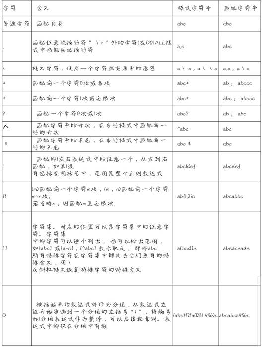
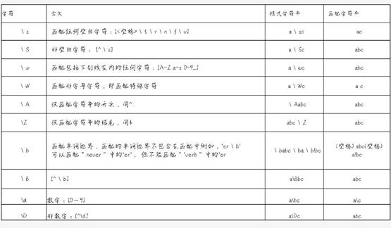
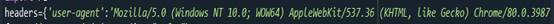
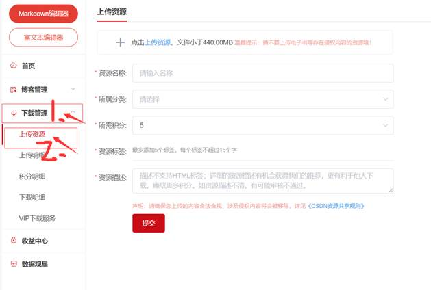
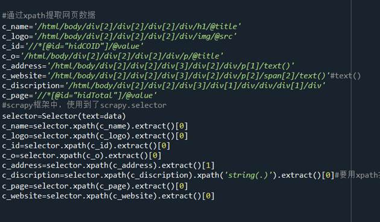
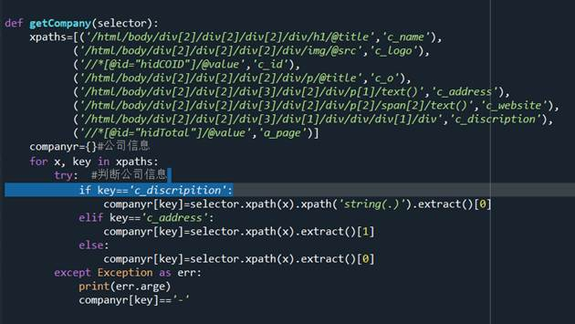

线上工作室—第二阶段
—项目实操—
正则表达式
定义: 使用单个字符串来描述、匹配一系列符合某种语法规则的文本。
运用：在文本编译器中，通常被用来检索，替换那些匹配某种模式的文本 。
普通元素与原字符

注意：
反斜杠\的作用：
①.后面跟原字符，表示去除特殊功能（即将特殊字符串转义成普通字符串）
②.后面跟普通字符串可实现特殊功能（即预定义字符）
预定义字符集

文件操作
写文本文件
f=open(a.txt,'w',encoding='utf-8')#文件名称,‘w'，'格式’
f.write('bbbb')#调用write(),添加所需内容
f.close()#关闭保存，必须关闭
写入‘w'：会覆盖以前的文件
'a'：加入
读取：'r’#read(
#'readlines()'读取所有
URL
定义：在WWW上，每一信息资源都有统一的且在网上唯一的地址，该地址就叫URL（Uniform Resource Locator,统一资源定位符），它是WWW的统一资源定位标志，就是指网络地址。
URL网络连接
在Python中如何运用url网络连接：
①.导包
import urllib.request as r#导入联网工具包，命令为r
②.添加所需网络链接
url=''
③.打开链接，读取数据
data=urlopen(url).read().decode('utf-8')#将bytes类型转换成str类型
URL反爬虫
有些网站安全级别很高，不易爬取数据，我们想要得到数据就得进行反爬虫技术。
我们就需要进行伪装，使用User-Agent将自己伪装
如何找到User-Agent：
在所需网页点击右键打开检查，点击Netbook，刷新，任意 一条数据里面就有User-Agent
注意：反爬虫代码是dict类型
例：

发布exe
发布软件可以选择在CSDN，GitHub上直接发布
CSDN上发布需要较长时间审核，GitHub可以直接上传
我是在CSDN上发布的exe，所以我就说下CSDN发布软件的步骤：
①.生成exe文件（如果想exe文件有可爱的小头标，可以在https://www.easyicon.net/1227690-panda_icon.html下载ico图标，然后在anacoda3管理员身份运行里输入pyinstaller -F -i xxx.ico xxx.py）
②.登录CSDN账号，打开

确认信息，点提交，审核通过就成功了。
scrapy框架
定义：Scrapy是用纯Python实现一个为了爬取网站数据、提取结构性数据而编写的应用框架，用途非常广泛
如何运用scrapy框架：
①.安装scrapy：在anaconda3管理员身份运行里运‘’conda install -c scrapyinghub scrapy‘’
以下步骤全部在spider储存文件目录下进行
②.scrapy框架新建项目：scrapy startproject job51
③.新建爬虫任务：进入项目：cd job51；创建一个爬虫任务：scrapygenspider company 51job.com
④.运行爬虫任务：scrapy crawl company
运行相关注意：
①.utf-8编码会产生中文乱码，所以decode需要选择gbk编码
②.在运用xpath提取数据时，description需要两次才能将br标签祛除（第一次定位，第二次获取标签下的所有字符串）

③.公司网址的span标签可用text()将其祛除
④.scrapy在requests中并不适用
⑤.要检测提取的数据；检测getcompany方法
